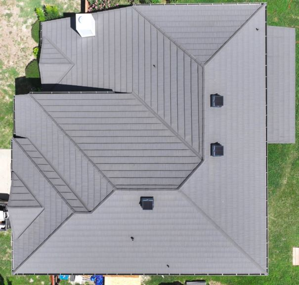

Roofing Experts Serving San Antonio Homes
Green Shield Roofing has completed extensive roof inspections, maintenance, and repairs throughout San Antonio and the surrounding communities, including Leon Valley, Stone Oak, Alamo Heights, Tobin Hill, Selma, Universal City, Cibolo, and Schertz.
San Antonio homes face unique roofing conditions caused by extreme heat, UV exposure, sudden windstorms, and seasonal hail events. Many properties also feature aging shingles, ventilation challenges, and flashing details that require experienced, detail-oriented care.
San Antonio features a higher concentration of tile and stone-coated steel roofing systems than many other regions of Texas. These materials require specialized installation, repair techniques, and an understanding of proper underlayment, fastening methods, and flashing details.
Hiring a roofing contractor who is familiar with tile and stone-coated steel systems is critical to protecting your home, avoiding improper repairs, and ensuring your roof performs as designed for San Antonio’s heat, wind, and storm conditions.
Whether you need routine maintenance, leak repairs, or long-term roof planning, our team brings proven local experience and honest recommendations — no pressure, no guesswork.
Schedule Your San Antonio ConsultationRoofing Services for San Antonio Homeowners
Residential Roofing
Residential roofing services designed for San Antonio homes, including asphalt shingle repairs, upgrades, and full roof replacements.
Roof Maintenance & Preventative Care
Proactive roof maintenance programs that help San Antonio homeowners catch small issues early and extend roof lifespan.
Leak Detection & Roof Repair
Precise leak detection and repairs for common San Antonio problem areas such as pipe penetrations, flashing, valleys, and ventilation components.
Storm & Wind Damage Inspections
Thorough post-storm roof inspections following South Texas wind and hail events, including photo documentation and insurance claim assistance when needed.
Metal & Tile Roofing
Premium roofing upgrades including stone coated steel , impact-resistant shingles, and synthetic tile systems built for San Antonio’s climate.
Roof Replacement Planning
Clear, honest guidance for San Antonio homeowners planning ahead for roof replacement, helping avoid emergency situations and rushed decisions.